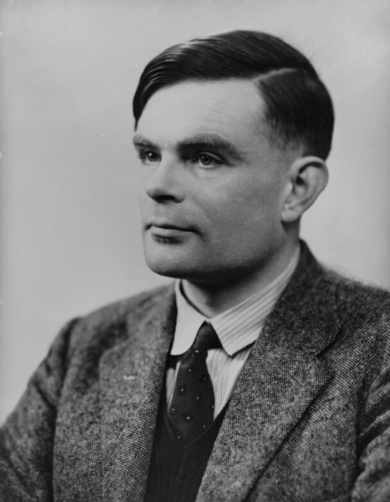
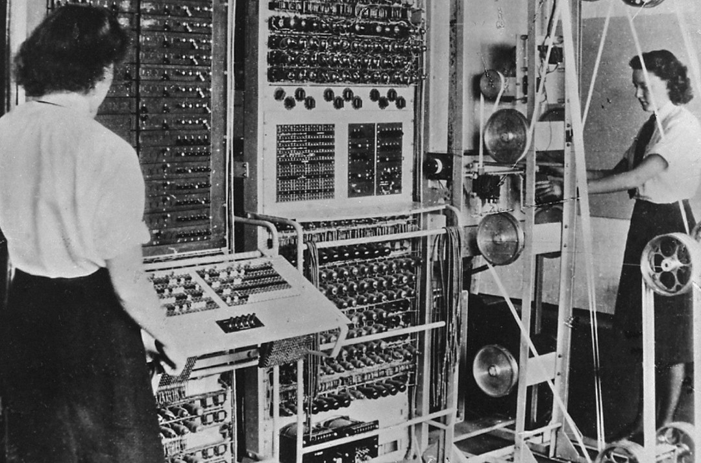

Né à Londres le 23 juin 1912, Alan Turing est l’un des esprits les plus brillants de la Seconde Guerre mondiale. Mathématicien de génie, il joue un rôle essentiel dans le décryptage des communications allemandes codées par la machine Enigma. Son travail à Bletchley Park influence directement la bataille de l’Atlantique et accélère la victoire alliée.

Ce portrait montre un homme discret, concentré, dont le regard exprime une intelligence rare et une détermination silencieuse. Turing est connu pour sa rigueur, son imagination mathématique et sa capacité à résoudre des problèmes considérés comme impossibles.
Durant la guerre, Turing rejoint Bletchley Park, centre secret de cryptanalyse britannique. Il conçoit la machine Bombe, capable de casser les clés Enigma utilisées par la Wehrmacht. Grâce à ses travaux, les Alliés interceptent et décryptent des milliers de messages ennemis, sauvant des convois, des navires et des vies.

Après Enigma, Turing contribue au développement de Colossus, l’un des premiers ordinateurs électroniques programmables. Ses travaux posent les bases de l’informatique moderne et de l’intelligence artificielle. Le célèbre Test de Turing, conçu en 1950, reste une référence mondiale.
En 1952, Turing est condamné pour homosexualité, alors illégale au Royaume‑Uni. Il subit une castration chimique et meurt en 1954 dans des circonstances tragiques. En 2013, il reçoit un pardon royal, reconnaissant l’injustice de son traitement.
Alan Turing est aujourd’hui considéré comme l’un des plus grands héros scientifiques de la Seconde Guerre mondiale. Son génie, son courage et son héritage technologique continuent d’influencer le monde moderne.